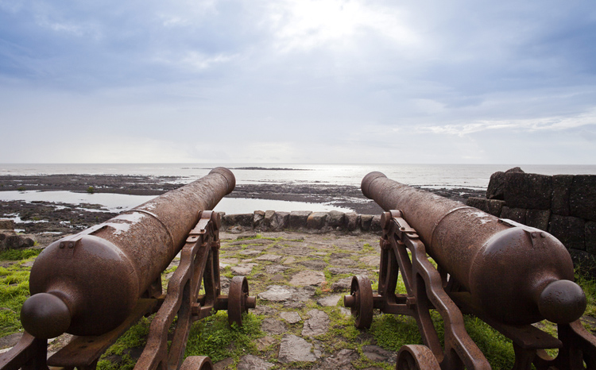
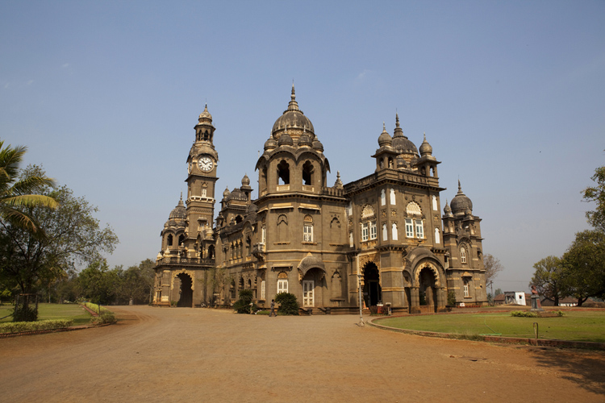
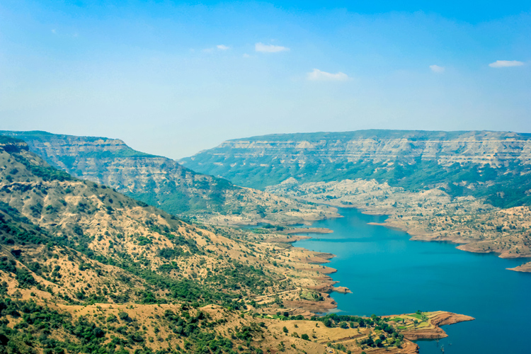
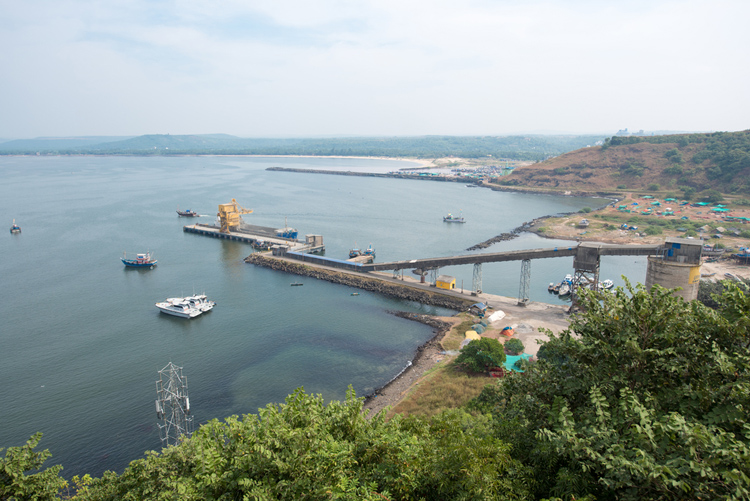
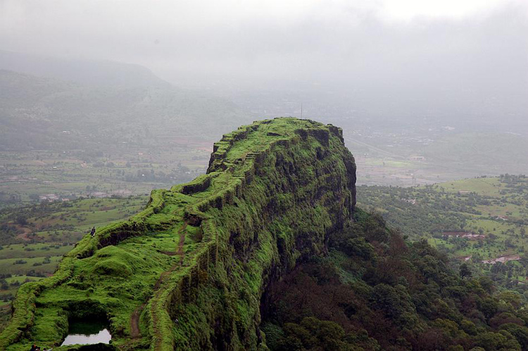

ALIBAUG
Alibag, also known as Alibaug, is a coastal town, just south of Mumbai, in western India. It’s known for its beaches like Alibag Beach and Varsoli Beach. Just offshore, 17th-century Kolaba Fort has carvings of tigers and elephants, and temples dedicated to Hindu gods. To the south, Portuguese-built Korlai Fort dates from 1521 and includes a lighthouse. The island fort of Janjira has high walls, turrets and cannons.
AURANGABAD

Aurangabad is a city in Maharashtra state, in India. It’s known for the 17th-century marble Bibi ka Maqbara shrine, styled on the Taj Mahal. The nearby Shivaji Maharaj Museum, dedicated to the Maratha king Shivaji, displays war weapons and a coin collection. North of the city, the Aurangabad Caves comprise ancient, rock-cut Buddhist shrines. West of the city, battlements surround the medieval Daulatabad Fort.
KHANDALA

Khandala is a hill station in the Western Ghat mountains of Maharashtra, western India. It's home to vantage spots including Sunset Point and Rajmachi Point, with views of Rajmachi Fort. Kune Falls is a 3-tiered waterfall set in a dramatic valley. Waterfalls surround the Tamhini Ghat mountain pass. East of town, the Bhaja and Karla caves are ancient, Buddhist rock-cut shrines featuring intricate carvings and pillars.
KOLHAPUR
Kolhapur is a city on the banks of the Panchaganga River, in the west Indian state of Maharashtra. It’s known for its temples, like the ancient Mahalakshmi Temple, a Hindu pilgrimage site. The Bhavani Mandap is an imposing old palace with a small museum displaying stuffed wild animals. Close by, Rankala Lake is surrounded by gardens. The hilltop Jyotiba Temple complex is on the city's outskirts.
MAHABALESHWAR
Mahabaleshwar is a hill station in India's forested Western Ghats range, south of Mumbai. It features several elevated viewing points, such as Arthur’s Seat. West of here is centuries-old Pratapgad Fort, perched atop a mountain spur. East, Lingmala Waterfall tumbles off a sheer cliff. Colorful boats dot Venna Lake, while 5 rivers meet at Panch Ganga Temple to the north.
RATNAGIRI
Ratnagiri is a port town in Maharashtra, western India. Overlooking the Arabian Sea, Ratnadurg Fort has the Bhagwati temple and a lighthouse. Northeast, a fish museum and aquarium includes turtles and a whale skeleton. Thibaw Palace was the residence of the exiled king of Burma. North of the city, Ganpatipule Temple is dedicated to Lord Ganesh. Northeast, Koyna Wildlife Sanctuary is a forested area sheltering tigers.
SOLAPUR
Solapur is famous for its Chadder, Handloom, Powerloom and Beedi Industries, covering an area of 14844.6 sq. kms., is one of the important districts in Maharashtra State of India. Solapur developed as a commercial center for cotton and other agricultural produce.